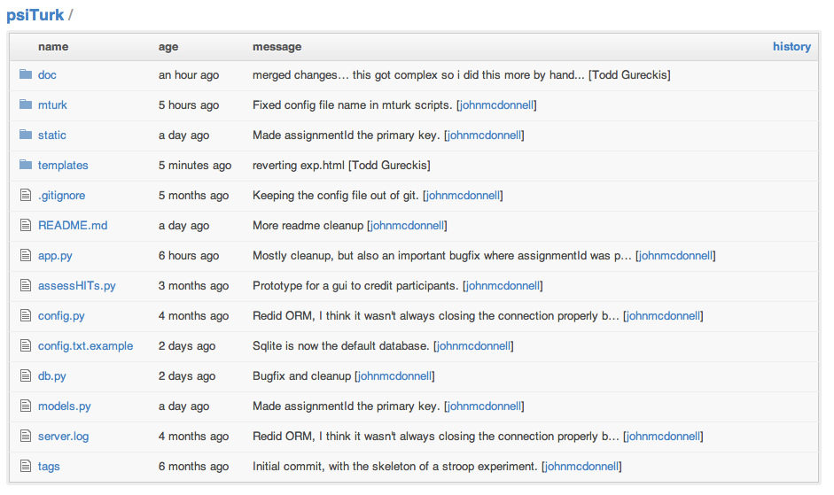

class: center, middle .task[Part 3: Using psiTurk] <div class="rotatetitle"> # .blue[Part 3]: Building dynamic web experiments </div> --- class: center, middle .task[Part 3: Using psiTurk] # psiTurk ### .gray[Our "framework" for doing online experiments] ### [https://github.com/NYUCCL/psiTurk](https://github.com/NYUCCL/psiTurk) <img src="images/github.png" width="200"> --- .task[Part 3: Using psiTurk] # What DOES it do for you? - Handle the most common sequence of interactions a subject in an experiment will need to do 1. View ad for .red[**HIT**] 1. Present debriefing form 1. Verify the workerId hasn't participated in your experiment before 1. Launch experiment as external hit 1. (Present instructions) 1. (Display Experiment) 1. Communicate back to AMT when job is done 1. (Store data in a local database) 1. (Store data INCREMENTALLY in a local database) - Helps to automatically submit hits, check your current Amazon funds balance, and assign credit - The code provides an example of a dynamic Javascript experiment that does a Stroop-like task which you can extend however you like. --- .task[Part 3: Using psiTurk] # What is it actually? - A small webserver that you run in Python that makes it very easy to customize - You launch the webserver by just running the Python script - It runs on a designated port on your computer - You point the .blue[**Workers**] at this url - Everything should run smoothly Based on three key open-source packages: <img src="http://flask.pocoo.org/static/logo/flask.png" width="250"> <img src="http://www.sqlalchemy.org/img/sqla-logo6.gif" width="250"> [boto](https://github.com/boto/boto) --- .task[Part 3: Using psiTurk] # Software dependencies **Python** If you've never used Python before, we recommend you use the [Enthought Python distribution](http://www.enthought.com/repo/.epd_academic_installers), because it comes with easy_install, a tool for easily installing Python packages. Once you've installed Enthought, you should be able to open a terminal window and install **Flask** (the web server library we'll be using) and **SQLAlchemy** (the database manipulation package we'll be using) with the following command: .bash easy_install Flask-SQLAlchemy If you get a permissions error, try: .bash sudo easy_install Flask-SQLAlchemy (which will prompt you for your password) --- .task[Part 3: Using psiTurk] # Software dependencies You will also find it useful to install **boto**, a Python library which enables interaction with Amazon's Mechanical Turk servers to help assign credit to participants. To install: .bash easy_install boto Finally, you can try getting things up and running by cloning our repository using the following command: .bash git clone git://github.com/NYUCCL/psiTurk.git (Further instructions are provided here: [http://github.com/NYUCCL/psiTurk](http://github.com/NYUCCL/psiTurk)) --- .task[Part 3: Using psiTurk] # Model, View, Controller (MVC) A common software development pattern. If you are _not_ a scientist and do end-user programming (e.g., Android, iOS, webapps), this is probably how you are designing things. <img src="images/MVC.png" align="right" width="350"> - **Model** is basically your data. - A common situation is for the model to contains the abstract logic of your application - What kind of data is being stored, how it is formatted, is there computation that the app is supposed to do? - **View** is the UI elements presented to a user of the software - Independent of the model - Idea is object-oriented encapsulation... the graphics people can design the interface while the engineers build the model - **Controller** is the "glue" which binds the model to the view --- .task[Part 3: Using psiTurk] # File listing - **models.py** defines the **Model** - **app.py** is the **Controller** - The various HTML files inside the templates/, static/ folders are the **View**  --- .task[Part 3: Using psiTurk] # The most important idea - **app.py** runs a webserver which is basically listening for requests (i.e., requests are attempts to access a particular URL) - These requests are handled using .red['routes'] which are simple functions in **app.py** that run in response to a URL request. - Normal web server: - You request http://gureckslab.org/coolpage.html - The server sends the content of coolpage.html in a format your browser can read and display - **app.py** server: - You request http://gureckislab.org/mturk - The server runs a python function associated with the 'mturk' .red['route'] - This function may, or may not also send to the user's browser some HTML can it can read and display - However, since it is a Python function, can do lots of other stuff like add data to a database, etc... --- .task[Part 3: Using psiTurk] # An example If you request .orange[http://myip.edu:PORT/consent], this function will run .python @app.route('/consent', methods=['GET']) def give_consent(): """ Serves up the consent in the popup window. """ if not (request.args.has_key('hitId') and request.args.has_key('assignmentId') and request.args.has_key('workerId')): raise ExperimentError('hit_assign_worker_id_not_set_in_consent') hitId=request.args ['hitId'] assignmentId = request.args ['assignmentId'] workerId = request.args ['workerId'] print hitId, assignmentId, workerId return render_template('consent.html', hitid = hitId, assignmentid=assignmentId, workerid=workerId) which checks to see if the workerid is set correctly and basically prints out the 'consent.html' template (last line) into the users browser window. **So a layer of computation/logic is inserted into any web requests!! **